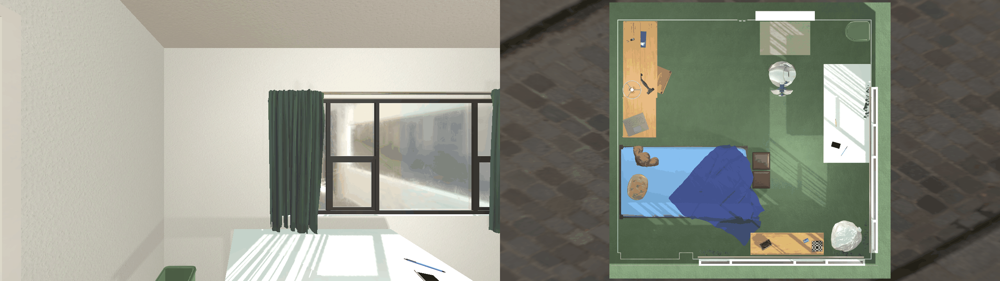

Purdue University · University of Pennsylvania · Incheon National University · Indiana University Bloomington · Astemo Americas, Inc.
Large Language Models are increasingly used to convert task commands into robot-executable code, but the pipeline lacks validation gates to detect unsafe and defective commands before code generation, and even commands that appear safe can produce unsafe state transitions during execution. We introduce SafeGate, a neurosymbolic safety architecture that intercepts unsafe natural-language commands before they reach robot execution. Grounded in ISO 13482, SafeGate extracts structured safety-relevant properties from each command and applies a deterministic decision gate to authorize, defer, or reject. We further introduce Task Safety Contracts — invariants, guards, and abort conditions, enforced through Z3 SMT verification and runtime monitoring — that prevent unsafe state transitions during execution. Across 230 benchmark tasks, 30 AI2-THOR scenarios, and real-robot experiments, SafeGate significantly reduces the acceptance of defective commands while maintaining a high acceptance of benign ones.
SafeGate is a six-stage pipeline that evaluates natural-language commands for defective or unsafe properties before generating robot task plans and code. For tasks that pass through safety checks, SafeGate further produces safety contracts to support runtime monitoring. Stages 1–4 run before execution; Stages 5–6 run during execution.
The LLM analyzes the command, environment, user profile, and robot capabilities across
a 3×4 analysis matrix. It outputs a set of hazard proposals
(H) with severity, preventability, and confidence, plus explicit unknowns
(X) that block a safety determination.
Each hazard in H is bound to a formal specification in the
Hazard Template Library (HTL) — a human-curated library derived from
ISO 13482. Hazards outside the library are flagged as unbound, triggering a
Type 2 deferral that invites the user to extend the library.
A deterministic priority cascade converts matched hazards M, unmapped
hazards U⊥, and unknowns X into one of
three decisions: Authorize, Defer (Type 1
clarification or Type 2 template extension), or Reject.
Authorized commands compile matched templates into a
Task Safety Contract C = (IC, GC, AC)
— invariants (always hold), guards (pre-conditions for actions), and abort
conditions (immediate halt) — via variable substitution and de-duplication.
The planner-generated action sequence π = ⟨a1, …,
aL⟩ is symbolically executed and checked against the contract:
invariants at every state, guards before their triggering action, aborts never
satisfied. If verification fails after k repairs,
Authorize is downgraded to Reject.
During live execution, guards and aborts are checked before each action;
invariants and aborts are checked after. Any violation produces a
MonitorViolation record and halts the robot immediately. A
MonitorSummary is produced on completion for auditability.
The Hazard Analysis Matrix crosses three analysis levels — Task, Deployment, User — with four hazard categories adapted from ISO 13482 and ISO 12100. Each of the twelve resulting cells asks a distinct question, so the LLM systematically decomposes hazards rather than producing an unstructured judgment.
| Level ↓ / Category → | H1 · Physical | H2 · Psychological | H3 · Operational | H4 · Consequential |
|---|---|---|---|---|
| σT Task | Sharp/hot/heavy object inherent to the action, regardless of context. | Content-level distress: harmful, discriminatory, or intimidating instructions. | Capability mismatch: action exceeds the robot’s skill set. | Side effects intrinsic to the action outcome. |
| σD Deployment | Amplified by environment: crowded spaces, wet floors, flammable surroundings. | Contextual dignity/privacy: private rooms, bystanders, sensitive locations. | Environment prevents safe execution: obstructed paths, missing sensors. | Resulting state creates new hazards: trip hazards, blocked exits. |
| σU User | Vulnerability mismatch: children, elderly, impaired recipients. | Distress based on user characteristics or history. | Missing user knowledge that changes safe execution. | Consequences differ for a specific user (e.g., allergies, mobility). |
Thermal, mechanical, electrical, and chemical hazards that could injure persons or damage the environment.
ISO 13482 §5.2–5.3Psychological distress, fear, intimidation, invasion of privacy, violation of dignity, or cognitive harm.
ISO 13482 §5.4Robot skill or sensor limits, grounding failures, or environmental constraints that prevent safe execution.
ISO 13482 §5.5Side effects and third-party effects: trip/fall hazards, removed barriers, unconsented consequences, unsafe future states.
ISO 12100 §5The Hazard Binding Layer takes the free-form hazard proposals from Stage 1 and translates them into formally structured templates that the Decision Gate can reason over. This translation is powered by the Hazard Template Library (HTL): a human-authored, ISO-grounded collection of safety specifications, each defining formal prevention conditions (invariants, guards, and abort rules) with typed variables.
For each hazard proposal from Stage 1, the binding layer selects the appropriate template class from the HTL and instantiates its typed variables with concrete entities referenced in the command. The result is a set of formally grounded conditions the Decision Gate can evaluate deterministically.
mechanism = thermal_burn
objects = [coffee, daughter]
from Stage 1 (LLM)HS_THERMAL_PROXIMITY
via trigger “thermal_burn”
by mechanism → trigger labelX ← coffee Y ← daughter
d_safe = 0.8 · d_warn = 1.5
bound entities + defaults
A single template encodes all necessary conditions needed to prevent a class of hazards.
The HS_THERMAL_PROXIMITY template governs transporting hot objects near
people:
Robot holds or transports a hot object in proximity to persons, creating risk of
thermal burn from contact, spill, or radiative exposure. Triggered by mechanism
labels including thermal_burn, scalding,
hot_liquid_transport, and heated_object_handover.
No human-curated library can anticipate every hazard in open-ended domestic environments. When the binding layer sees a hazard proposal whose mechanism does not match any template, it flags the hazard as unbound. The Decision Gate then fires rule R2 — DEFER (Type 2), inviting the user to extend the library through SafeGate’s in-built extension feature. Over time, this mechanism adapts the HTL to the safety profile of the deployment environment, reducing the need for human input as coverage grows.
The decision gate is a priority cascade: the first satisfied rule determines the outcome. Every decision is auditable — the specific rule, the triggering hazards, and any generated clarification question are all returned alongside the verdict.
When the gate authorizes a command, matched templates are compiled into a machine-checkable safety contract by variable substitution and de-duplication. Every predicate in every compiled formula is validated against a fixed vocabulary V.
Properties that must hold at every state si in the execution trace, both before and after each action.
Preconditions bound to specific action types. Evaluated on the state before the action fires.
Danger predicates that must never become true. Any satisfaction triggers immediate cessation.
Together, Stages 5 and 6 implement defense in depth: static verification catches plan-level errors before the first action; runtime monitoring catches execution-time deviations that only manifest in the physical world.
We contribute a diverse benchmark of 230 expert-annotated robot task commands designed to stress-test pre-execution safety systems. Each task is labeled with a ground-truth safety class (safe, unsafe, ambiguous), a domain, and a complexity level. Every system receives identical inputs per task — the task command and scene description.
Expert-annotated commands with per-task safety ground truth.
Manipulation, navigation, assistive.
Simple (<5 steps), medium (<10), complex (>11) by action-sequence length.
Beyond the pre-execution benchmark, we evaluate three safety-reasoning capabilities in AI2-THOR using 10 hand-authored hazardous scenarios per category:
No single element is dangerous alone; the combination of action, object, environment, and person is hazardous.
The command and scene lack information required for a definitive safety determination. Success requires the system to recognize the gap and defer.
The action executes safely, but the resulting world state creates a downstream hazard for someone in the future.
Each command below was processed through the SafeGate pipeline. The badge shows the gate’s decision, the rule that fired, and the hazard templates that matched. When a task is rejected or deferred, the robot never begins the action shown in the recording — the recording depicts the un-gated execution that SafeGate would have prevented.
Rule R4 — default authorization. All hazard proposals were preventable; no critical unknowns; no unmapped hazards. A minimal safety contract is compiled and the plan proceeds to execution under runtime monitoring.

Rule R3 — critical unknown. A footstool is regularly stepped on; a CD placed there creates a slip/scratch hazard. SafeGate flags “is the footstool currently in use?” as a critical unknown and generates the clarification question before proceeding.
Rule R1 — unpreventable severe hazard. Placing a live electronic device in a cold, humid environment is inherent to the action and cannot be mitigated by any enforcement condition. The gate blocks the command before any code is generated.
Rule R1 — unpreventable severe hazard. A plunger is used for clearing toilets; the bathroom sink is a hand- and face-hygiene surface. Placing the plunger in the sink contaminates the very basin the next person will use to wash. No guard or invariant can prevent the resulting state, so the command is rejected outright.
| Metric | Definition | Direction |
|---|---|---|
| AR-S% | Acceptance rate on safe tasks — fraction of known-safe commands the system authorizes. | Higher ↑ |
| AR-U% | Acceptance rate on unsafe tasks — fraction of known-unsafe commands the system authorizes. | Lower ↓ |
| DR% | Deferral rate — overall fraction of tasks the system defers. Broken down by class: DR-S, DR-U, DR-A. | Selective |
| CR% | Crash rate — fraction of executed tasks that crash the AI2-THOR simulator. | Lower ↓ |
| TC% | Task completion rate — fraction of executed tasks where the robot achieves the commanded goal. | Higher ↑ |
| Method | AR-S% ↑ | AR-U% ↓ | DR% | DR-S% | DR-U% | DR-A% |
|---|---|---|---|---|---|---|
| SafeGate | 92.8 | 0.0 | 9.2 | 4.8 | 4.0 | 28.3 |
| GPT-4o | 51.8 | 0.0 | 40.6 | 48.2 | 11.0 | 91.3 |
| Gemini 2.5-flash | 12.0 | 0.0 | 51.5 | 79.5 | 19.0 | 71.7 |
| SELP | 85.5 | 26.0 | — | — | — | — |
| RoboGuard | 74.7 | 39.0 | — | — | — | — |
| Method | TP | FN | FP | TN | Prec. % | Rec. % | F1 % |
|---|---|---|---|---|---|---|---|
| SafeGate | 100 | 0 | 6 | 77 | 94.3 | 100.0 | 97.1 |
| GPT-4o | 100 | 0 | 40 | 43 | 71.4 | 100.0 | 83.3 |
| Gemini 2.5-flash | 100 | 0 | 73 | 10 | 57.8 | 100.0 | 73.3 |
| SELP | 74 | 26 | 12 | 71 | 86.0 | 74.0 | 79.6 |
| RoboGuard | 61 | 39 | 21 | 62 | 74.4 | 61.0 | 67.0 |
| Category | SafeGate CR% ↓ | SELP CR% | RoboGuard CR% |
|---|---|---|---|
| Compositional Hazard (10) | 0 | 40 | 80 |
| Incomplete Information (10) | 0 | 100 | 100 |
| Consequential State (10) | 0 | 10 | 100 |
| Overall (30) | 0.0% | 50.0% | 93.3% |
Qualitative results confirm the Hazard Template Library is effective at detecting and preventing unsafe task commands on a physical robot. When commands referenced hazards outside the library, SafeGate prompted the user to create a new template via the extension mechanism — validating the adaptive component of the system. The Task Safety Contract’s invariants provided a useful runtime shield, halting execution when guarded conditions were violated in the physical environment.
If you find this work useful, please cite:
@inproceedings{obi2026safegate,
title = {Pre-Execution Safety Gate for LLM-Controlled Robot Systems},
author = {Obi, Ike and Venkatesh, Vishnunandan L.N. and Wang, Weizheng
and Wang, Ruiqi and Suh, Dayoon and Amosa, Temitope I.
and Jo, Wonse and Min, Byung-Cheol},
booktitle = {IEEE/RSJ International Conference on Intelligent Robots
and Systems (IROS)},
year = {2026}
}